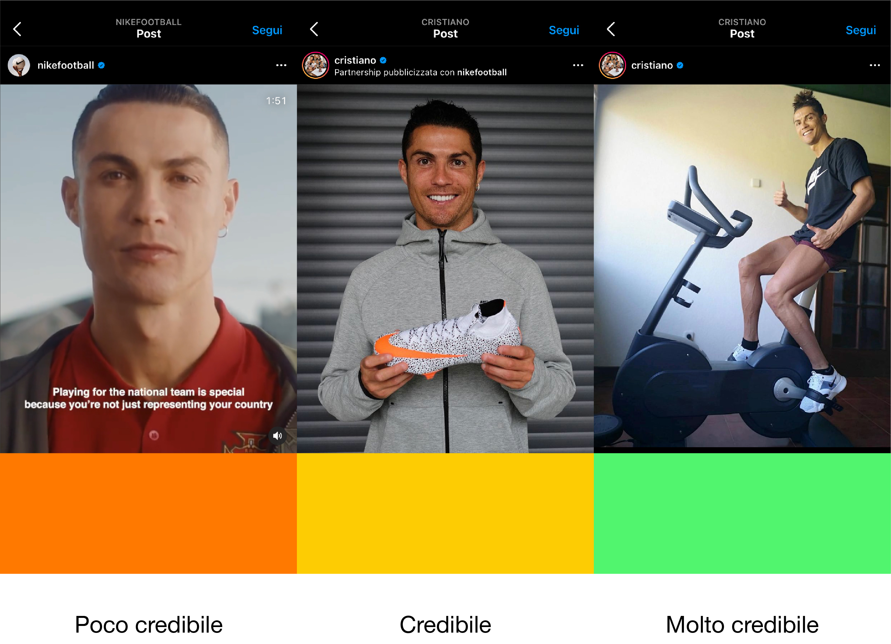

I testimonial funzionano ancora?
Analisi critica dei metodi di utilizzo del modello di interazione interpersonale in pubblicità.
Secondo una nuova ricerca condotta all’università di Bath (in Inghilterra), le pubblicità che utilizzano come testimonial persone comuni sono più efficaci di quelle dove compaiono personaggi noti, belli e famosi.
I ricercatori hanno mostrato a centinaia di studenti la pubblicità di una macchina fotografica digitale dove il testimonial era un giovane sconosciuto, mentre ad altri è stata mostrata la stessa identica scena, ma con un famoso attore. In seguito tutti i volontari hanno affermato che la sensazione generale sul prodotto era positiva, ma solo quelli del primo gruppo erano disposti a comprare la macchina fotografica.
Secondo i ricercatori il fenomeno può essere spiegato con il fatto che quando si deve acquistare qualcosa, siamo più propensi a credere a un signor Rossi qualunque piuttosto che a una persona famosa, poiché lo sentiamo più vicino a noi. Le persone che si incontrano tutti i giorni vengono percepiate come più simili, in termini di esperienza e quindi più vicine alle nostre esigenze.
Brad Martin, coordinatore della ricerca, afferma che questo fenomeno è particolarmente evidente nella pubblicità di prodotti a elevato contenuto tecnologico, dove la parola di un utilizzatore medio sembra valere più di quella di una star.
Questo studio evidenzia un decadimento della figura del Testimonial, ma forse è in crisi la figura del Testimonial in senso classico, infatti con la rivoluzione digitale e l’avvento dei social network, si può dire che i Testimonials si sono convertiti in Influencers.
Cosa differenzia un Testimonial da un Influencer?
Forse solo la maggiore efficacia che ha l’influencer nell’attirare visibilità e generare vendite.
Cosa rende un Influencer più efficace di un Testimonial?
Case Study: Cristiano Ronaldo
Secondo la ricerca dell’università di Bath tendiamo a fidarci di più di un qualunque signor Rossi rispetto a Cristiano Ronaldo; Il che sembrerebbe vero guardando alla presenza del calciatore nel nuovo spot pubblicitario dell’Università eCampus.
Ma perché non ci fidiamo di Cristiano Ronaldo?
Quello che manca al testimonial in questo spot è credibilità.
Non è affidabile perché non è credibile, e non è credibile perché è evidente che è stato pagato per fare la pubblicità di e-campus. Ovviamente tutti i testimonial sono pagati per fare il loro lavoro, ma quando il Testimonial non è credibile nel ruolo che interpreta, tutta la comunicazione appare meno naturale, meno fluida e quindi il contratto di lavoro è più evidente.
La distanza percepita tra Ronaldo e e-Campus è molto grande, i loro valori sono disallineati, e questo disallineamento produce un effetto controproducente.
Non crediamo minimamente a quello che dice, non è attendibile perché il contesto manca di credibilità e quindi di attendibilità.
Se quindi è importante creare un contenuto credibile, si capisce la maggiore efficacia del lavoro degli influencers.
Gli influencer sono più efficaci del classico testimonial in quanto comunicano all’interno di un contesto che hanno creato loro, (il loro profilo, con la loro community), e quindi la credibilità percepita è alta, e non sempre si riesce a distinguere se un influencer sia stato pagato per mostrare un prodotto o se utilizza davvero quel prodotto, quel Brand.

Analizzando tre post diversi della partnership tra Cristiano Ronaldo e Nike, possiamo notare come nel primo caso (1) la comunicazione avviene tramite il canale ufficiale del Brand di abbigliamento sportivo, la forza comunicativa di questo tipo di messaggi è limitata perchè manca di naturalezza.
Nel caso (2), la comunicazione avviene tramite la pagina di Cristiano Ronaldo. Dal punto di vista di un follower dell’atleta, è Cristiano Ronaldo a postare una foto della scarpa Nike. Il messaggio sarebbe quindi molto credibile, se solo non fosse che nella parte superiore del post viene indicata visibilmente la partnership commerciale tra i due.
Nel caso (3) non si parla più di credibilità, siamo ben oltre. Cristiano Ronaldo è naturale, durante un momento di attività fisica e cosa si può notare: lo swoosh Nike sulla t-shirt, e sulle scarpe.
Questa è vera persuasione, Ronaldo veste Nike, la narrazione è coerente e il messaggio è fortissimo.
Non è un caso che la comunicazione più efficace sia quella occulta. Quella in cui il consumatore non sa che il prodotto che gli viene mostrato sia pubblicizzato, così facendo infatti, il consumatore subisce maggiormente l’influenza del prodotto, perché percepisce coerenza e armonia nel messaggio.
L’obbiettivo di una comunicazione deve quindi essere quello di tendere a questo ideale di coerenza, tendere a un narrazione credibile in ogni aspetto e capace di stimolare chi la percepisce.